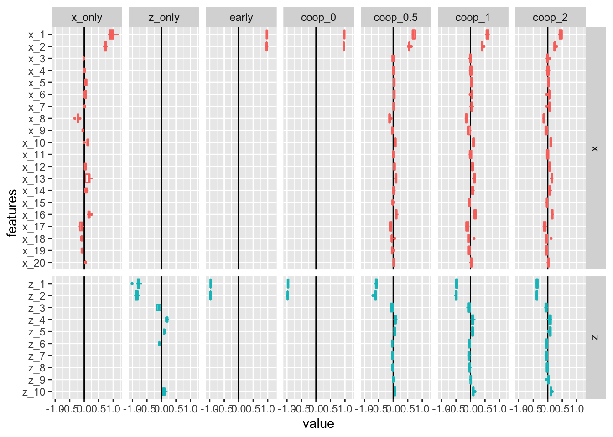
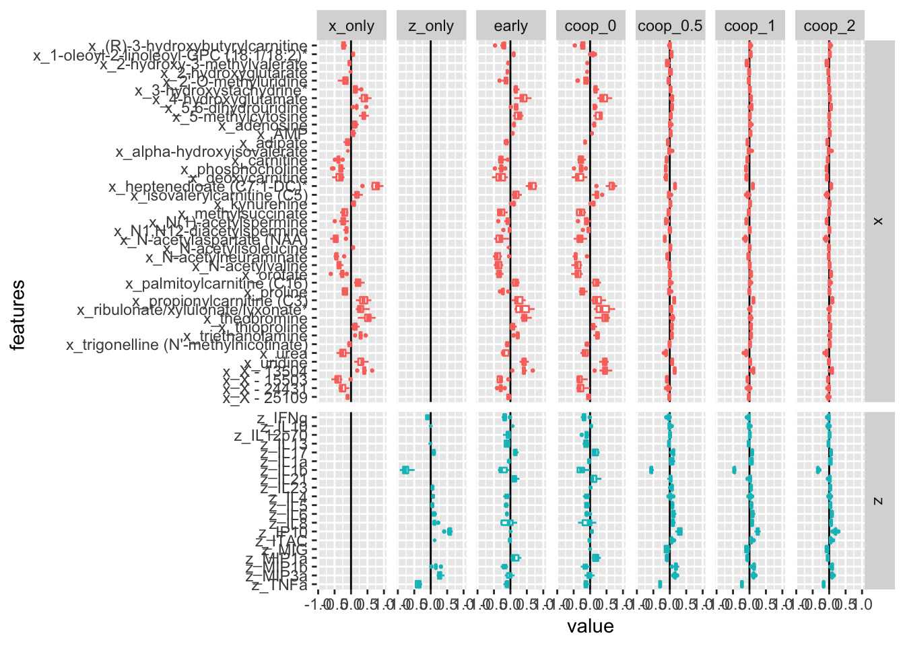
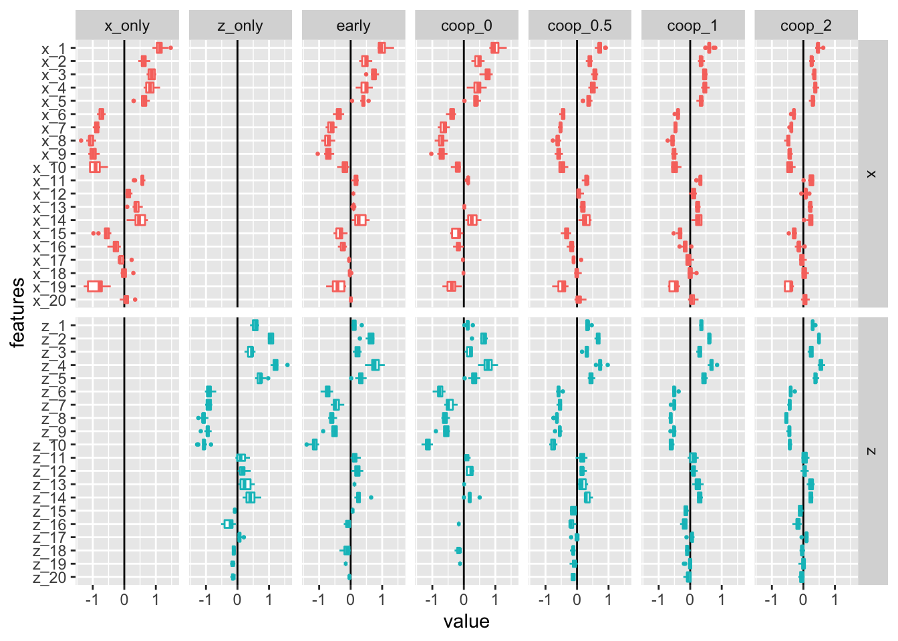
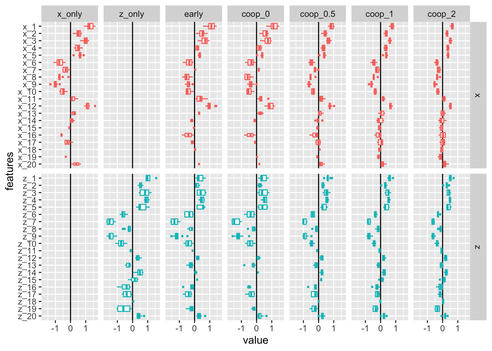

Warning in FUN(X[[i]], ...): no non-missing arguments to max; returning -Inf
Warning in FUN(X[[i]], ...): no non-missing arguments to max; returning -Inf

VMRC data
Trying to predict the proportion of lactobacillus species from the metabolites and the cytokines in the samples of our 40 pregnant subjects.
library(MultiAssayExperiment)
mae <-readRDS(file ="/Users/laurasymul/Dropbox/VMRC_analysis/Topic_paper/VMRC-subcommunities-analyses/results/mae_for_analyses.Rds")
x =assay(mae, "MB_P_t_imputed") %>%t() colnames(x) <-str_c("x_", colnames(x))z =assay(mae, "I_t_imputed") %>%t() colnames(z) <-str_c("z_", colnames(z))common_samples <-intersect(rownames(x), rownames(z))x <- x[common_samples,]z <- z[common_samples,]y <- mae$prop_Lacto[match(common_samples, mae$SampleID)]x <-scale(x)z <-scale(z)pre_x <-glmnet(x = x, y = y, family =quasibinomial())# we keep around 40 nonzero featuresj <-min(which(pre_x$df >40))pre_selected_features <- pre_x$beta[pre_x$beta[,j] !=0, j] %>%names()x <- x[, pre_selected_features]x_list <-list(x = x, z = z)
Warning in FUN(X[[i]], ...): no non-missing arguments to max; returning -Inf
Warning in FUN(X[[i]], ...): no non-missing arguments to max; returning -Inf

view.contribution(x_list = x_list, y = y, rho =0.5,family =quasibinomial(), eval_data ="train" )
view error percentage_improvement
1 null 0.15570538 0.00000
2 x 0.03956639 74.58894
3 z 0.10763509 30.87260
4 cooperative (all) 0.39744278 -155.25308
view.contribution(x_list = x_list, y = y, rho =0,family =quasibinomial(), eval_data ="train" )
view error percentage_improvement
1 null 0.15549934 0.00000
2 x 0.03785414 75.65640
3 z 0.10749998 30.86789
4 cooperative (all) 0.22600666 -45.34251
Sanity check: cooperative learning does better when correlated views?
x =matrix(rnorm(200*20), 200, 20)z =matrix(rnorm(200*20), 200, 20)U =matrix(rep(0, 200*10), 200, 10) # latent factorsfor (m inseq(10)){ u =rnorm(200) x[, m] = x[, m] + u z[, m] = z[, m] + u U[, m] = U[, m] + u }beta_U =c(rep(2, 5),rep(-2, 5))y = U %*% beta_U +2*rnorm(100)x_list =list(x = x, z = z)
Warning in FUN(X[[i]], ...): no non-missing arguments to max; returning -Inf
Warning in FUN(X[[i]], ...): no non-missing arguments to max; returning -Inf

view.contribution(x_list = x_list, y = y, rho =0.5,type.measure ="mse",family =gaussian(), eval_data ="train" )
view error percentage_improvement
1 null 38.71527 0.00000
2 x 24.25575 37.34837
3 z 26.92966 30.44177
4 cooperative (all) 18.98086 50.97319
view.contribution(x_list =list(x = x, z = z, w =cbind(x, z)), y = y, rho =0.5,type.measure ="mse",family =gaussian(), eval_data ="train" )
view error percentage_improvement
1 null 38.54210 0.00000
2 x 24.78660 35.68955
3 z 25.14252 34.76611
4 w 19.49467 49.41981
5 cooperative (all) 18.96403 50.79659
Sanity check2: Does it help to lower the SNR?
x =matrix(rnorm(200*20), 200, 20)z =matrix(rnorm(200*20), 200, 20)U =matrix(rep(0, 200*10), 200, 10) # latent factorsfor (m inseq(10)){ u =rnorm(200) x[, m] = x[, m] + u z[, m] = z[, m] + u U[, m] = U[, m] + u }beta_U =c(rep(2, 5),rep(-2, 5))y = U %*% beta_U +6*rnorm(100)x_list =list(x = x, z = z)
Warning in FUN(X[[i]], ...): no non-missing arguments to max; returning -Inf
Warning in FUN(X[[i]], ...): no non-missing arguments to max; returning -Inf

view.contribution(x_list = x_list, y = y, rho =0.5,type.measure ="mse",family =gaussian(), eval_data ="train" )
view error percentage_improvement
1 null 66.76711 0.00000
2 x 47.87502 28.29550
3 z 49.57693 25.74648
4 cooperative (all) 42.96525 35.64909
view.contribution(x_list =list(x = x, z = z, w =cbind(x, z)), y = y, rho =0.5,type.measure ="mse",family =gaussian(), eval_data ="train" )
view error percentage_improvement
1 null 66.51350 0.00000
2 x 47.16136 29.09506
3 z 48.35237 27.30443
4 w 45.30439 31.88693
5 cooperative (all) 43.47544 34.63667
Sanity check2: Increase nb of features
p_u <-60x =matrix(rnorm(200*20), 200, 1000)z =matrix(rnorm(200*20), 200, 1000)U =matrix(rep(0, 200*10), 200, 60) # latent factorsfor (m inseq(10)){ u =rnorm(200) x[, m] = x[, m] + u z[, m] = z[, m] + u U[, m] = U[, m] + u }beta_U =c(rep(2, p_u/2),rep(-2, p_u/2))y = U %*% beta_U +6*rnorm(100)x_list =list(x = x, z = z)
Warning in FUN(X[[i]], ...): no non-missing arguments to max; returning -Inf
Warning in FUN(X[[i]], ...): no non-missing arguments to max; returning -Inf